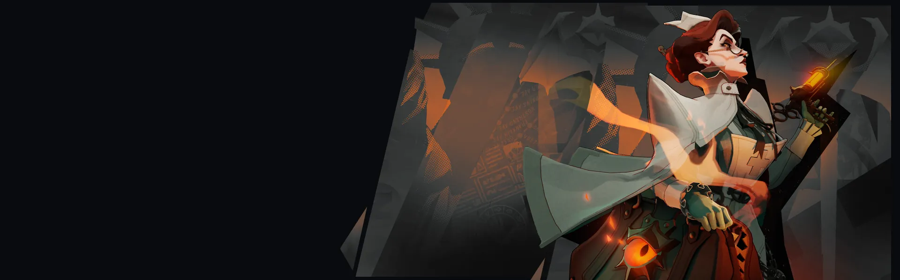

Curandeira que drena os inimigos com sanguessugas e mantém o time vivo com cura injetada.
História
Um pilar respeitado na Ala de Possessão de Marble Hill, a enfermeira Harrow dedicou sua vida ao combate aos horrores da possessão sobrenatural. Uma mistura de cuidado, severidade e pragmatismo imparcial; Harrow foi chamada de santa por alguns de seus pacientes e de governanta cruel por outros. Ambos são provavelmente verdadeiros.
Mas embora qualquer pessoa sã questione como e por que Harrow mantém a dor de seus pacientes guardada em sua maleta médica, ninguém pode questionar os resultados de seu programa de tratamento... por mais cruel que seja.
História oficial do jogo, traduzida automaticamente para o português.
Números reais
Habilidades
Joga um pote de sanguessugas que grudam nos inimigos, causam dano espiritual contínuo e encurtam a duração dos efeitos bons deles. Depois de se alimentarem, as sanguessugas voltam rastejando e curam você, e cada uma dá regeneração e cadência de tiro permanentes (até 10 acúmulos; você perde 25% deles ao morrer).
Libera um vapor em você ou num aliado: por 4s tudo fica mais rápido e o dano recebido é adiado em espectros. Quando o vapor passa, tudo fica mais lento e os espectros que sobrarem estouram o dano guardado com um extra. Cura recebida apaga os espectros antes de estourar.
Carrega a arma com uma carga cheia de seringas que curam os aliados. Causar dano devolve cargas, e cada sanguessuga coletada repõe cargas aos poucos. Recarregar gasta uma carga; apertar de novo guarda as seringas que sobraram.
Abre a bolsa e solta os horrores que carrega: dano espiritual contínuo nos inimigos à frente. Quem olha para você acumula terror e não pode usar stamina nem habilidades de movimento; no terror máximo, foge de medo. Cada sanguessuga coletada aumenta a duração do medo.
Builds mais usadas
54.301 partidas registradas com esta build.
Regeneração Extra (800) · Espírito Extra (800) · Revista Titânico (1.600) · Traço Cinético (1.600) · Atacante Rápido (1.600) · Impulsionador de cura (1.600) · Saúde Extra (800) · Surto Arcano (1.600) · Expansão Mística (800) · Extensor de duração (1.600)
36.617 partidas registradas com esta build.
Regeneração Extra (800) · Revista Estendida (800) · Revista Titânico (1.600) · Traço Cinético (1.600) · Impulsionador de cura (1.600) · Surto Arcano (1.600) · Rodadas Monstruosas (800) · Barril Enferrujado (800) · Saúde Extra (800) · Refutação (800)
29.681 partidas registradas com esta build.
Regeneração Extra (800) · Revista Estendida (800) · Espírito Extra (800) · Revista Titânico (1.600) · Botas de corrida (800) · Colecionador de Troféus (1.600) · Vigor Extra (800) · Traço Cinético (1.600) · Rodadas rápidas (800) · Atacante Rápido (1.600)
Confrontos reais
 Mina — 58.0% de vitória
Mina — 58.0% de vitória Mirage — 57.9% de vitória
Mirage — 57.9% de vitória Pocket — 57.0% de vitória
Pocket — 57.0% de vitória The Doorman — 56.7% de vitória
The Doorman — 56.7% de vitória Paradox — 56.7% de vitória
Paradox — 56.7% de vitória Viscous — 56.5% de vitória
Viscous — 56.5% de vitória
 Graves — 45.3% de vitória
Graves — 45.3% de vitória Paige — 46.6% de vitória
Paige — 46.6% de vitória Rat King — 46.7% de vitória
Rat King — 46.7% de vitória Baba — 46.9% de vitória
Baba — 46.9% de vitória Victor — 47.4% de vitória
Victor — 47.4% de vitória Seven — 47.9% de vitória
Seven — 47.9% de vitória
Ver a página de counters do Nurse Harrow
O que upar primeiro
Nível por nível, na ordem que os jogadores mais usam em partidas de verdade. A porcentagem mostra quantos escolheram aquela habilidade naquele nível.
Melhores duplas
Heróis que mais ganham jogando junto com ele, em partidas reais (pelo menos 1.500 partidas juntos).
- Rat King58,5%
- Graves58,1%
- Paige56,8%
 Kelvin56,7%
Kelvin56,7%- Victor56,3%
 Sinclair44,6%
Sinclair44,6% Rem44,9%
Rem44,9%- Pocket45,1%
Rota (lane)
Na rota, cada lado joga em dupla. Estes números são de confrontos reais: a diferença de almas é medida com o jogo já começado, então almas no verde significa que ele costuma estar na frente.
- Graves — 42,2% de vitória −371 almas (3.612 partidas)
- Paige — 45,0% de vitória −277 almas (3.829 partidas)
- Seven — 45,0% de vitória −399 almas (1.008 partidas)
 Ivy — 45,0% de vitória −650 almas (289 partidas)
Ivy — 45,0% de vitória −650 almas (289 partidas)- Celeste — 45,4% de vitória −613 almas (260 partidas)
- Rat King — 46,3% de vitória −864 almas (26.576 partidas)
 Haze — 46,3% de vitória −1.027 almas (3.187 partidas)
Haze — 46,3% de vitória −1.027 almas (3.187 partidas) Dynamo — 47,7% de vitória −270 almas (1.278 partidas)
Dynamo — 47,7% de vitória −270 almas (1.278 partidas)
 Yamato — 61,9% de vitória +184 almas (155 partidas)
Yamato — 61,9% de vitória +184 almas (155 partidas) Shiv — 57,4% de vitória −296 almas (530 partidas)
Shiv — 57,4% de vitória −296 almas (530 partidas)- Rem — 55,2% de vitória −436 almas (1.227 partidas)